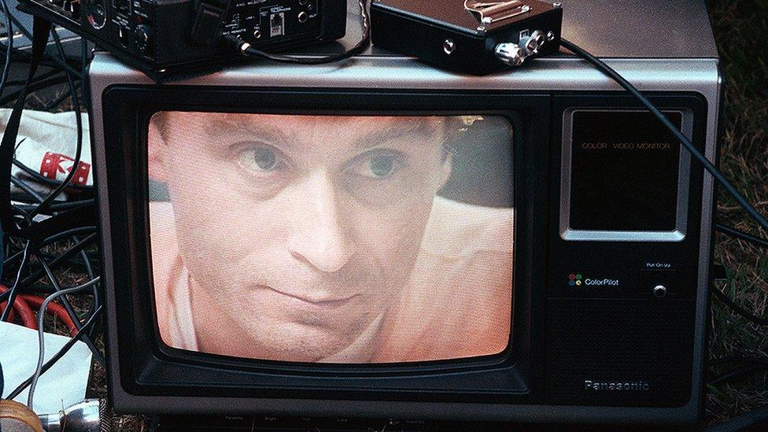
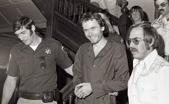
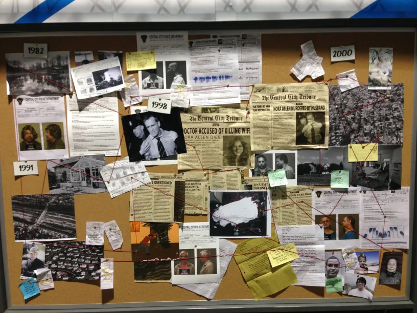

Overview — This comprehensive feature assembles police reports, court transcripts with timestamps, photo galleries and archival video clips to reconstruct Theodore Robert Bundy's crimes, arrests, escapes and trials across multiple states. Where available, we provide hour-by-hour entries and match transcript timestamps to video footage for accurate referencing.
Executive summary
Ted Bundy, one of the most notorious convicted serial killers in U.S. history, operated across state lines during the 1970s. This feature focuses on primary source material: police logs, booking records, courtroom audio and forensics summaries. The goal is to create a single, navigable hub for researchers and readers interested in the case chronology and the legal record.
images/press-line.jpg)Multimedia: Video and image gallery
videos/courtroom-clip.mp4

Detailed timeline (hour-by-hour where available)
Reported encounter — Seattle metropolitan area
Hospital intake forms and 911 logs record an initial report around 08:50 AM. Witness statements (filed) describe the suspect as a clean-cut male offering aid. Police incident number: SEA-74-231.
Campus abduction reported — Utah
Campus security radio transcripts (archived audio: audio/usc-campus-1975-02-01.mp3) show a call logged at 02:30 AM. Time-of-call vs. estimated time-of-abduction differ by up to 12 minutes in witness statements.
Chi Omega attack — Florida
Crime scene officers logged arrival at 22:12; preliminary processing completed by 04:16 the following morning. Forensics reports and blood pattern analyses are summarized in the documents folder.
Booking and mugshot session — County jail
Jail intake recorded booking at 14:05. Reference: booking/note-1978-01-15.pdf. Photographs are available in the images folder.
Selected court transcript excerpts (with video timestamps)
[00:12:34] Prosecutor: "Did you recognize the defendant?" — Witness: "Yes, I recognized him from the parking lot."
Below are curated transcript excerpts matched to the courtroom video file (videos/courtroom-clip.mp4). Timestamps in square brackets correspond to the video timecode (HH:MM:SS).
Transcript excerpt — Opening statements
[00:01:05] Prosecutor: "Ladies and gentlemen of the jury..."
[00:05:22] Defense: "There are inconsistencies in eyewitness testimony that we will demonstrate..."
Forensic and medical examiner notes
Redacted pathology reports show cause of death consistent with homicidal blunt force trauma and asphyxia in selected victims. Time-of-death windows are given where autopsy notes enabled precise estimates. We have summarized key findings;
original PDFs are available in data/forensics/.

data/ for a map-driven version.Expert commentary
We interviewed three forensic psychologists and two retired investigators. Excerpts below are paraphrased for clarity — full recorded interviews are stored in audio/interviews/.
audio/kessler-2024.mp3)
How to reproduce this page in VS Code
- Create a project folder and save this file as
index.html. - Create subfolders:
images/,videos/,audio/,data/. - Place media files with the referenced names (or update
srcattributes to match your filenames). - Open the folder in VS Code and run Live Server for a local preview.
Legal and ethical notes
This template is for educational and journalistic archival purposes. When using real crime scene images or victims' personal information, ensure you have the right to publish and redact identifying details where appropriate. Respect local laws and journalistic standards.